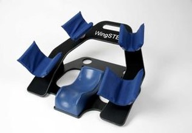
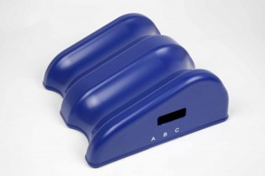
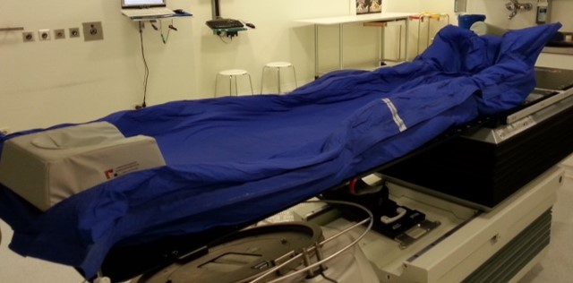

Fall Herr K. – Bronchial-Ca. vom Befund zum PLCT-Setting
Diese App läuft parallel zur Praxisrotation am Planungs-CT. Du arbeitest selbstständig an Task 1 und Task 2, unterbrichst bei Bedarf für deine 3er-Rotation und steigst danach wieder ein. Deine Eingaben werden automatisch gespeichert – kein Datenverlust bei Wechsel zur Praxisstation.
Start & Ablauf
Orientierung, bevor es fachlich losgeht: Was ist Pflicht? Was kommt wann dran? Wann gehst du zur Praxisstation?
Was du heute können sollst
- OAR-Hierarchie beim Bronchial-Ca. mit Dosisgrenzen benennen
- TNM-Staging interpretieren und Therapieintention ableiten
- Lagerungsentscheidung aus dem Befund begründen
- ITV-Konzept und 4DCT als Atemmanagement-Standard einordnen
- DIBH bei Bronchial-Ca. vs. Mamma-Ca. fachlich unterscheiden
Aufgabentypen in dieser App
- R – Reproduktion: Fakten abrufen und benennen
- T – Transfer: Wissen auf den konkreten Fall anwenden
- Re – Reflexion: Begründen, abwägen, urteilen
- Pflichtspur: Mission 2–4 (Task 1), Mission 5–6 (Task 2)
Einstiegsfrage: Was weisst du schon?
AktivierungDu kennst DIBH vom Mamma-Ca.-Unterricht. Was verändert sich deiner Einschätzung nach beim Bronchial-Ca.? Keine richtige oder falsche Antwort – nur Vorwissen aktivieren.
Einsatzregeln bestätigen
VerbindlichkeitFallakte Herr K. – OAR & Staging
Bevor du irgendeine Entscheidung am PLCT triffst, musst du den Fall verstehen. OAR-Hierarchie und TNM-Staging steuern alles: Feldgrenzen, Lagerung, Technikwahl.
Patientenakte Herr K.
Dosiskonzepte beim Bronchial-Ca. – Referenz
| Konzept | Einzeldosis | Gesamtdosis | Besonderheit / Indikation |
|---|---|---|---|
| Definitiv-RCT (kurativ) | 2,0 Gy | 60–66 Gy | 30–33 Fx; simultan Chemo (z.B. Cisplatin/Etoposid) |
| SBRT / SABR (peripher, operabel) | 15–18 Gy | 45–54 Gy | 3–5 Fx; nur bei Sta. I–II, guter LuFu; strenge OAR-Grenzen |
| Palliativ (Symptomkontrolle) | 3–4 Gy | 30–39 Gy | 10–13 Fx; bei Stadium IV oder schlechtem AZ |
| Prophylaktische SHB (SCLC) | 2,5 Gy | 25 Gy | 10 Fx; nur SCLC Limited Disease nach Ansprechen |
Risikoorgane (Priorität): Lunge gesamt (V20), Herz (MHD), Rückenmark (Dmax), Ösophagus, Plexus brachialis
Kompaktwissen: OAR-Hierarchie Thorax
- Lunge (gesamt): V20 Gy ≤ 30–35 % – zu hoher Anteil bestrahlten Parenchyms → Strahlenpneumonitis (Spätfolge)
- Herz: Mean Heart Dose (MHD) ≤ 20–26 Gy – Langzeitrisiko kardiovaskulär; bei re. Tumor günstiger als links
- Rückenmark (Myelon): Dmax ≤ 45–50 Gy – Überschreitung → Strahlenmyelopathie, irreversibel
- Ösophagus: Dmax ≤ 60–70 Gy, D5ml ≤ 50 Gy – akute Radiooesophagitis als häufige Nebenwirkung
Kompaktwissen: NSCLC vs. SCLC – Therapierelevanz
- NSCLC (80 %): Plattenepithel-Ca., Adeno-Ca., großzellig → kurativ bestrahlbar in Sta. I–III, RT ± Chemo
- SCLC (20 %): sehr aggressiv, früh metastasierend → prophylaktische Schädelbestrahlung bei Limited Disease, kombinierte Systemtherapie
- Herr K. hat NSCLC cT2b cN1 cM0 → Stadium II B → definitiver kurativer Ansatz möglich
Vertiefung (optional)
Tumor Target Therapy – Bronchial-Ca. Grundlagen
Zum Einstieg in Epidemiologie, Diagnostik und Therapielogik beim Bronchial-Ca.
Kanal öffnenLeitlinie Lungenkarzinom (AWMF)
Aktuelle S3-Leitlinie: Staging, Therapiealgorithmen, OAR-Grenzwerte.
Leitlinie öffnenAufgabe 1 (R): OAR-Hierarchie
ReproduktionBenenne die 3 kritischsten Risikoorgane beim Bronchial-Ca. mit ihren klinisch relevanten Dosisgrenzen und der jeweiligen Konsequenz bei Überschreitung.
- Welches OAR liegt direkt hinter dem Tumor auf dem Weg zu Feldern aus posterior?
- Welches OAR wird mit einem Volumenparameter (Vx) bewertet – nicht nur mit einem Dmax?
- Welches OAR liegt mediastinal und spielt langfristig eine Rolle, auch wenn der Tumor rechtsseitig liegt?
Aufgabe 2 (R): TNM-Staging interpretieren
ReproduktionWas bedeutet cT2b cN1 cM0 bei Herrn K.? Formuliere die Staging-Aussage in eigenen Worten und leite die Therapieintention daraus ab.
- T2b: Tumor 4–5 cm Durchmesser (T2a = 3–4 cm)
- N1: ipsilaterale peribronchiale oder hiläre Lymphknoten befallen – noch kein Mediastinalbefall (N2)
- M0: keine Fernmetastasen nachgewiesen
- Stadium IIB → definitiv-simultane Radiochemotherapie (RCT) möglich
Lymphknotenstationen Lunge – IASLC-Karte

💡 Finde Station 10R auf der Karte. Das ist Herrn K.s N1-Status. Was würde N2 bedeuten – welche Station wäre dann befallen?
Lagerung am PLCT – Ableitung & Begründung
Eine PLCT-Lagerung ist keine Routine, sondern eine begründete Entscheidung. Jedes Hilfsmittel hat eine Funktion. Hier leitest du für Herrn K. ab – nicht auswendig, sondern logisch.
Kompaktwissen: Standardlagerung Thorax-PLCT
- Rückenlage (RL): reproduzierbar, stabil, keine Rotationsfreiheit nötig; Organgeometrie gut definiert
- Arme hoch (Wingstep / Armhalter): Arme aus dem Strahlenfeld → Hautreaktion an Axilla vermieden, kein Feldeintrittspunkt durch Armweichteil; Wingstep = Armstütze speziell für Thoraxlagerung
- Knierolle: Lordose abflachen → Rückenmuskulatur entspannt, Atemkomfort verbessert, Reproduzierbarkeit höher
- Achsgerechte Lage: keine Rotation des Thorax → Feldgeometrie bei jeder Fraktion identisch
- Scan-Range: OK (Hals) bis UK (Nieren) – Ganzthorax + Oberbauch für vollständige OAR-Erfassung
Lagerungshilfsmittel am PLCT – Thorax



💡 Schau dir die Bilder an, bevor du Aufgabe 3 bearbeitest. Kannst du an jedem Hilfsmittel den klinischen Grund schon ablesen?
Aufgabe 3 (T): Lagerung für Herrn K. ableiten
TransferLeite ab: Wie wird Herr K. am PLCT gelagert? Begründe jedes Hilfsmittel mit seiner klinischen Funktion. Denke an Bestrahlungsplanung und Reproduzierbarkeit über alle Fraktionen.
- Was passiert mit dem Eintrittspunkt des Strahls, wenn die Arme heruntenhängen?
- Warum ist Reproduzierbarkeit bei kurativem Konzept (30+ Fraktionen) so wichtig?
- Welche OAR profitieren davon, wenn die Lendenlordose abgeflacht ist?
- Braucht Herr K. DIBH für die Lagerung? Begründe deine Antwort.
Scanprotokoll vervollständigen
TransferTrage die Schritte des PLCT-Protokolls für Herrn K. ein:
Fehlerdemonstration – was passiert bei Thorax-Rotation?
TransferAm PLCT heute hat der vorherige Patient einen leicht nach links rotierten Thorax hinterlassen. Welche Konsequenzen hätte das für Planung und Fraktionen 2–30?
Anatomie, Therapiemöglichkeiten & RT-Technik
Bevor du die Technikwahl am PLCT verstehst, brauchst du das Fundament: Wo liegt der Tumor? Welche Strukturen sind gefährdet? Welche Bestrahlungstechniken gibt es – und warum?
Kompaktwissen: Topographische Anatomie Thorax
- Lunge: re. Lunge = 3 Lappen (Ober-, Mittel-, Unterlappen), li. = 2 Lappen; Herr K.s Tumor liegt im re. Oberlappen → Nachbarstrukturen: Trachea, Carina, A. pulmonalis, re. Hauptbronchus
- Mediastinum: enthält Herz, große Gefäße (Aorta, V. cava), Ösophagus, Trachea, Lymphknoten-Stationen 4R/7/10R – alles potenzielle OAR oder N-Stationen
- Pleura: Tumor kann Pleura infiltrieren → Pleuritis, Pleurakarzinose – relevant für Staging (T3/T4) und Zielvolumendefinition
- Zwerchfell: Atemsynchrone Bewegung zieht Unterlappen-Tumore bis 30 mm nach kaudal → besonders relevant bei ITV/4DCT
- Plexus brachialis: oberer Thorax / Apex → bei apikalen Tumoren OAR-Constraint beachten (Dmax ≤ 66 Gy)
Lungenanatomie – Topographie

💡 Markiere gedanklich: Wo liegt der re. Oberlappen? Welche Strukturen sind in direkter Nachbarschaft? Das ist die Grundlage für Aufgabe 4a.
Kompaktwissen: Therapiemöglichkeiten beim NSCLC
- Stad. I–II (operabel): Chirurgie (Lobektomie) Erstlinie; SBRT bei Inoperabilität oder Ablehnung → 3–5 Fraktionen, hoch dosiert
- Stad. II–III (kurativ, inoperabel): simultane Radiochemotherapie (RCT) → Cisplatin/Etoposid + 60–66 Gy; bei Ansprechen ggf. Konsolidierung mit Durvalumab (Immuntherapie)
- Stad. IV (palliativ): Systemtherapie 1. Linie; RT zur Symptomkontrolle (Schmerz, Blutung, V.-cava-Syndrom), Hämoptoe; kurze Serien 5–10 Fx
- Herr K. (cT2b cN1 cM0, Stad. IIB): simultane kurativ-intendierte RCT; RT-Dosis 60–66 Gy in 2,0 Gy/Fx, simultan Chemotherapie
- SCLC Limited Disease: prophylaktische Schädelbestrahlung (PCI) 25 Gy / 10 Fx nach Ansprechen auf Systemtherapie
Kompaktwissen: Strahlentherapietechnik beim Bronchial-Ca.
- 3D-konformale RT (3D-CRT): mehrere koplanare/nicht-koplanare Felder, Multileaf-Kollimator formt Feldgrenzen → bewährt, auch bei schlechter Lungenfunktion einsetzbar
- IMRT / VMAT: Intensitätsmoduliertes Verfahren; bessere OAR-Schonung bei komplexen Zielvolumina (z.B. mediastinale LK-Stationen) → Standard bei kurativer Radiochemotherapie
- SBRT / SABR: Stereotaxie mit hoch hypofraktionierter Dosis; nur bei kleinen Tumoren (T1–T2), peripherer Lage, mindestens 2 cm Abstand von Bronchien/Trachea („No-fly-Zone“); strenge OAR-Constraints obligat
- Protonenstrahlung: physikalisch beste OAR-Schonung (Bragg-Peak); Indikation z.B. Re-Bestrahlung, komplexe Feldgeometrie – an den meisten Standorten nicht routinemäßig verfügbar
- Warum VMAT für Herrn K.? Großes Zielvolumen (Tumor + N1-Region), mediastinale Nähe, V20-Constraint kritisch → VMAT erlaubt bessere Lungenparenchym-Schonung als 3D-CRT
Ressourcen – Grundlagen Bronchial-Ca. & RT
Amboss – Bronchialkarzinom (Grundlagen)
Epidemiologie, Histologie, Staging, Therapiealgorithmus – kompakt und prüfungsrelevant.
Amboss öffnenAWMF S3-Leitlinie Lungenkarzinom
Therapiealgorithmen, RT-Indikationen, Dosisvorgaben – maßgebliche deutsche Leitlinie.
Leitlinie öffnenAufgabe 4a (R): Anatomische Lage einordnen
ReproduktionHerr K. hat einen Tumor im re. Oberlappen (cT2b cN1). Nenne 3 anatomische Nachbarstrukturen, die für die Feldplanung besonders relevant sind, und erkläre warum.
- Was liegt medial vom re. Oberlappen? (Hinweis: Carina, Mediastinum)
- Welche Struktur läuft posterior durch den Thorax – immer in der Nähe der Wirbelsäule?
- Woran erkennst du, dass N1-Befall die Feldgrenzen nach mediastinal erweitert?
Aufgabe 4b (T): Technikwahl begründen
TransferWarum ist VMAT beim kurativ-intendierten Bronchial-Ca. der Standard – und nicht 3D-CRT? Nenne 2 konkrete Vorteile am Beispiel von Herrn K.
ITV-Konzept & 4DCT – das primäre Atemmanagement
Der Thorax bewegt sich. Der Tumor bewegt sich. Wie erfasst man ein Zielvolumen, das ständig in Bewegung ist? Das ITV-Konzept ist die Antwort – und 4DCT das Werkzeug.
Zuerst informieren – dann bearbeiten
Tumor Target Therapy – 4DCT & Atemmanagement Strahlentherapie
Deutschsprachiger Kanal mit Fokus auf Strahlentherapie-Grundlagen. Suche auf dem Kanal nach „4DCT“ oder „Atemmanagement“ – erklärt Phasensortierung, ITV-Bildung und klinischen Einsatz.
Zum Kanal → Suche: 4DCTDEGRO / DGMP: Empfehlungen 4DCT
Fachgesellschaftliche Leitlinien zur klinischen Anwendung des 4DCT in der Strahlentherapie.
DEGRO öffnenKompaktwissen: ITV-Konzept
- Problem: Lungentumore können sich atemabhängig um 5–30 mm verschieben – je nach Lage und Atemtiefe
- ITV = Internal Target Volume: Hüllvolumen aller Tumorgrenzen über alle Atemphasen → sicherer Einschluss jeder möglichen Tumorposition
- Bildung: GTV aus Phase 0 % + GTV aus Phase 50 % + alle weiteren Phasen → Bool'sches Oder → ITV
- Klinische Folge: ITV ist immer größer als ein einzelnes GTV → mehr Lunge im Feld → V20-Constraint wird anspruchsvoller
Kompaktwissen: 4DCT-Prinzip
- 4D = 3D + Zeit: Atemkurve wird simultan zur CT-Aufnahme erfasst (Spirometer, RPM-System, Atemgurt)
- Rekonstruktion: CT-Datensatz wird in 10 Atemphasen (0–90 %) sortiert → 10 Phasen-Datensätze entstehen
- Auswertung: GTV auf allen Phasen konturiert oder automatisch propagiert → ITV wird berechnet
- Vorteil: Kein pauschaler Sicherheitssaum auf Verdacht – Tumorbewegung ist exakt bekannt
- Voraussetzung: regelmäßige Atmung, Patientenkooperation, ausreichende Scan-Dauer (ca. 10–20 Sek/cm)
Aufgabe 1 (R): ITV-Konzept erklären
ReproduktionErkläre das ITV-Konzept. Warum wird es beim Bronchial-Ca. benötigt? Was wäre die Konsequenz, wenn kein ITV gebildet wird?
- Was passiert mit dem Tumor bei Einatmung vs. Ausatmung? In welche Richtung bewegt er sich?
- Wenn ich nur in einer Atemphase plane, was passiert dann bei Fraktion 5, wenn der Patient anders atmet?
- Was ist der Unterschied zwischen GTV, CTV und ITV?
Aufgabe 2 (R): DIBH-Prinzip kurz erklären
ReproduktionErkläre das DIBH-Prinzip in 3 Sätzen. Für welche Indikation kennst du es hauptsächlich aus dem Unterricht?
DIBH vs. 4DCT – Vergleich & Transfer
Beide Verfahren managen Atembewegung – aber mit unterschiedlichen Zielen und Indikationen. Der Vergleich macht den Unterschied sichtbar.
Zuerst informieren – dann vergleichen
Tumor Target Therapy – DIBH Erklärung (Strahlentherapie)
Suche auf dem Kanal nach „DIBH“ oder „Atemgating“. Die Videos erklären das Prinzip des Atemstopps, Herzschutz beim Mamma-Ca. und die technischen Voraussetzungen – direkte Grundlage für den Vergleich in dieser Mission.
Zum Kanal → Suche: DIBHTumor Target Therapy – Atemmanagement & Lungentumoren
Suche zusätzlich nach „Lunge“ oder „Bronchial“ auf dem Kanal. Zeigt wie DIBH und 4DCT für unterschiedliche Indikationen eingesetzt werden – ideal als Vorbereitung für Aufgabe 4 (Reflexion).
Zum Kanal → Suche: Lunge / BronchialVergleich: DIBH Mamma-Ca. vs. Bronchial-Ca.
| Merkmal | DIBH – Mamma-Ca. (li.) | 4DCT/ITV – Bronchial-Ca. |
|---|---|---|
| Primäres Ziel | Herz rückt weg → MHD ↓ (Herzschutz) | Tumorbewegung erfassen → sicheres ITV bilden |
| Problem das gelöst wird | Herzexposition bei linksseitigem Feld | Atemverschieblichkeit des Tumors (bis 30 mm) |
| Standardverfahren? | DIBH = Standard bei li. Mamma + Herzrisiko | 4DCT/ITV = Standard; DIBH nur bei Selektion |
| Patientenanforderung | Atemstopp ca. 20 Sek reproduzierbar | Regelmäßige Atmung; Lungenfunktion oft eingeschränkt bei BC |
| Sekundärer Nutzen | Lungenvolumen ↑ → V20 günstiger | Alle Atemphasen bekannt → kein pauschaler Sicherheitssaum |
Aufgabe 3 (T): Vergleich in eigenen Worten
TransferVergleiche DIBH bei Mamma-Ca. vs. Bronchial-Ca. Worin unterscheiden sich die Behandlungsziele? Was ist jeweils das primäre Problem, das gelöst werden soll?
Aufgabe 4 (Re): Warum ist DIBH beim re. Bronchial-Ca. nicht primär indiziert?
ReflexionHerr K. hat einen Tumor im rechten Oberlappen. Heute wurde trotzdem DIBH demonstriert. Erkläre: Warum ist DIBH bei ihm nicht das primäre Verfahren? Und wann würde man es trotzdem erwägen?
- DIBH schützt primär das Herz durch Abstand. Liegt Herrn K.s Tumor nahe am Herzen?
- Was passiert bei re. Lungen-Tumor mit der linken Herzseite – ist sie typischerweise im Hochdosisfeld?
- Wann könnte DIBH trotzdem sinnvoll sein? Denke an: große Atemverschieblichkeit, unzureichendes V20 trotz 4DCT, gute Patientenkooperation.
Praxisstation – Beobachtungsauftrag am PLCT
Öffne diese Mission, wenn deine Gruppe aufgerufen wird. Hier findest du den strukturierten Beobachtungsauftrag für die Denklaut-Demo und die angeleitete Übung.
Ablaufschritte – Schritt für Schritt mitverfolgen
Beobachtungsauftrag: Was hat mich überrascht?
PraxisnotizNotiere während oder direkt nach der Rotation: Was war anders als erwartet? Welchen Schritt hattest du anders eingeschätzt?
Denklaut-Frage: Begründung hören
TransferDer Dozent sagt jeden Schritt laut mit Begründung. Schreibe die Begründung für einen Schritt mit – den, der dir am wichtigsten erscheint.
Abschluss & Exit-Ticket
Lernzielsicherung: Kannst du Lagerung und Atemmanagement beim Bronchial-Ca. jetzt begründet erklären? Das Exit-Ticket gibt dir und dem Dozenten eine direkte Rückmeldung.
Exit-Ticket 1: Setup Bronchial-Ca. – 2 Merkssätze
LernzielsicherungFormuliere 2 prägnante Merkssätze zum PLCT-Setup beim Bronchial-Ca. für jemanden, der heute nicht dabei war.
Exit-Ticket 2: Wann 4DCT, wann DIBH?
LernzielsicherungFormuliere 1 klaren Satz: Wann ist 4DCT das primäre Verfahren beim Bronchial-Ca. – und wann würde man DIBH trotzdem erwägen?
Selbstreflexion: Wo stehst du?
ReflexionBronchial-Ca. abgeschlossen
Du hast Task 1 (Fallbeispiel Herr K.) und Task 2 (Atemmanagement) vollständig durchgearbeitet. Deine Antworten kannst du exportieren und ausdrucken.